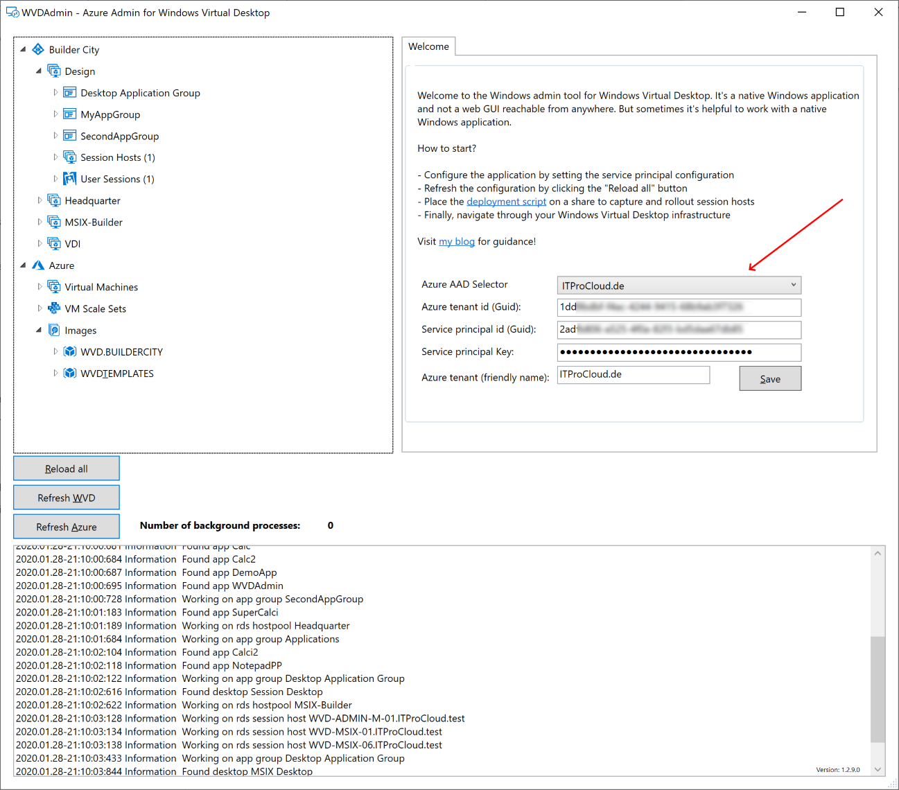
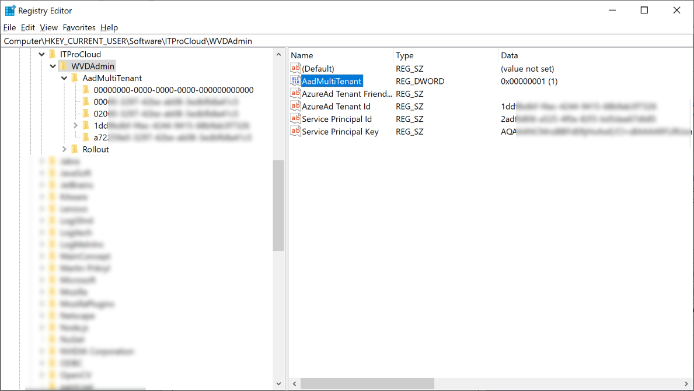
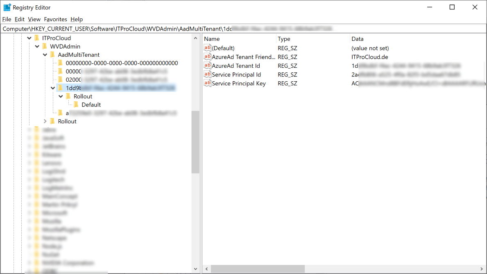

WVD Admin - Windows Virtual Desktop Administration for CSP and Consulting Partners
Windows Virtual Desktop Administration for CSP and Consulting Partners
Last year I released my windows-based GUI for administrating WVD to the community called WVDAdmin. I had a bunch of updates to share more features. This week I will release version 1.3.0 with will add another feature, especially for providers and consulting companies. From version 1.3.0 WVDAdmin will support a multi-AAD-tenancy mode allowing to switch the Azure AD tenant very easily.

To enable the multi-AAD-tenancy mode, you must set a registry key. Add the following dword32 to your registry:
HKEY_CURRENT_USER\Software\ITProCloud\WVDAdmin
Name: AadMultiTenant
Type: DWORD32
Value: 1 (or 0 to disable this mode)

If you start WVDAdmin with this setting, a drop-down list will be visible at the welcome screen (see above). If you save a new service principal configuration, it happens to the drop-down list with the friendly name. All other settings for the image creation or rollout of new session hosts are saved to the context of the selected AAD tenant.
The authentication settings and other settings are saved in different trees in the registry starting from HKEY_CURRENT_USER\Software\ITProCloud\WVDAdmin\AadMultiTenant If you had already used WVDAdmin in the “normal” mode, you could copy the settings from the root of the registry path to the new path for your AAD tenant. To delete a no longer needed AAD-tenant in WVDAdmin, remove the registry key of this one.

Don’t change the AAD tenant while an operation is in progress. This could result in an error. If you change the AAD tenant, click “Reload all” to read the configuration for the new tenant.
The AAD multi-tenancy mode helps a lot if you have (like me) multiple clients you are working with.
Feel free to use it and download the 64-bit Windows application “WVD Admin” from here: WVDAdmin Preview
Read the original blog post about WVDAdmin here: https://blog.itprocloud.de/Windows-Virtual-Desktop-Admin